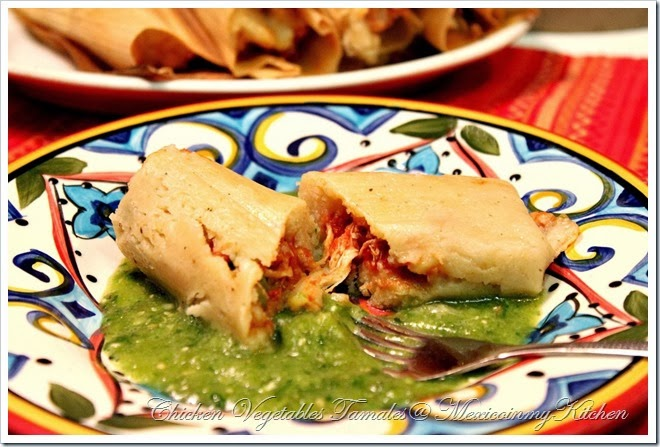

Making tamales :0

Description
this is a latin american dish that is a staple food for many
latin american households consisting of masa dough filled
with meats,cheese and sauce all wrapped in a corn husk or banana leaves. it is made during special occasions and holidays
tamales have originated in Mesoamerica.
Ingredients
- masa flour
- meat of your choice
- corn husk or banana leaves
- serrano peppers
- salt and cumin
- Tomatillo
Steps
- create the dough for the tamales by mixing the flour
with water and mixing it until its made into a dough form
- toasting the serrano peppers with the Tomatillo and blending them to make the sauce
- cook the meat of your choice
- add the sauce with the meat until fully cooked
- put your corn husk in boiling water for it to be ready to be wrapped
- place your masa dough into your banana leave or corn husk and spread it out
- put in your meat into the middle of the masa dough
- wrap it up and repeat until you have no more masa left
- cook on stove top Add water to the bottom of your stove-top steamer or Instant Pot pressure cooker. (About 1 cup for IP and a few cups for a steamer pot—don’t fill above the steamer rack.)